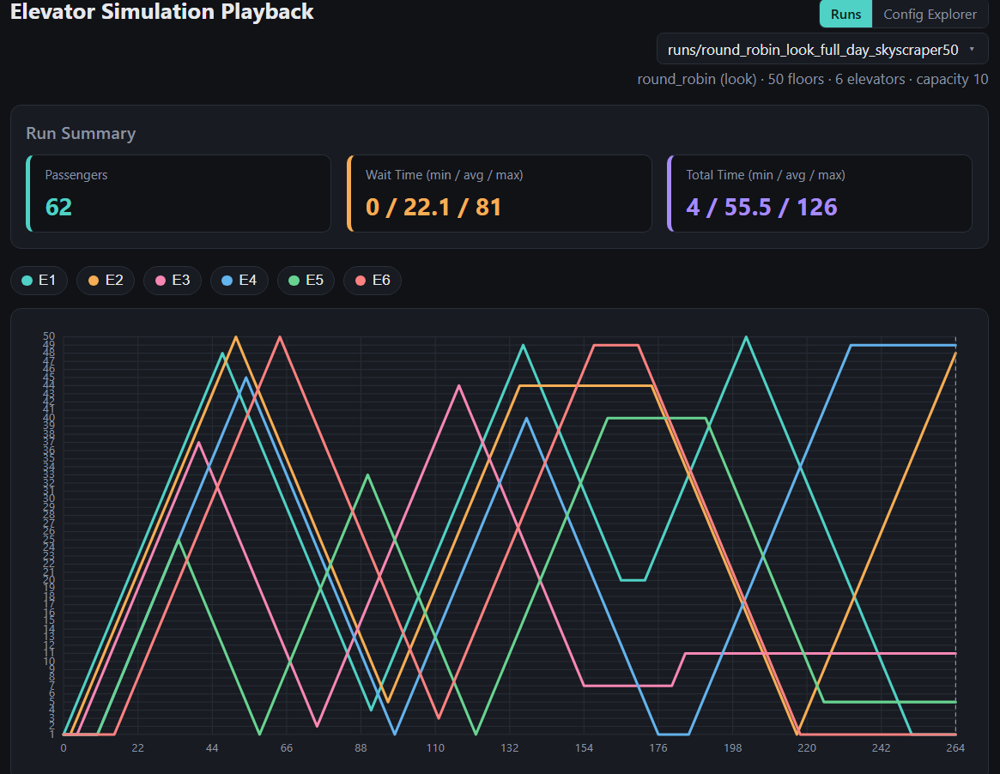
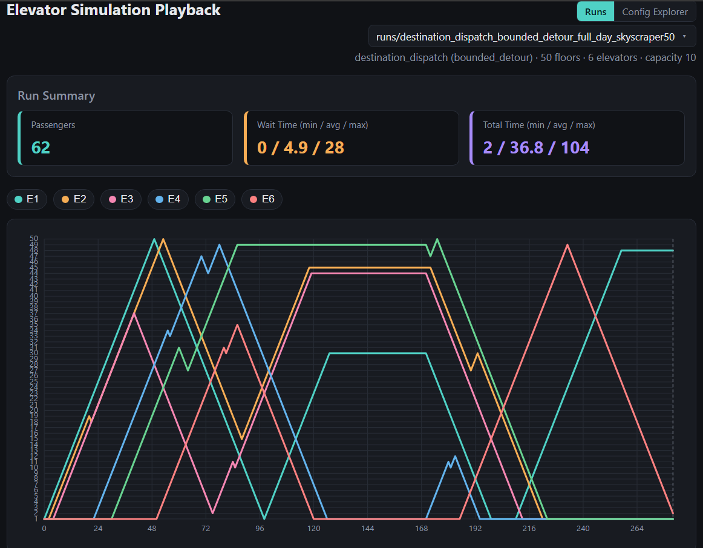
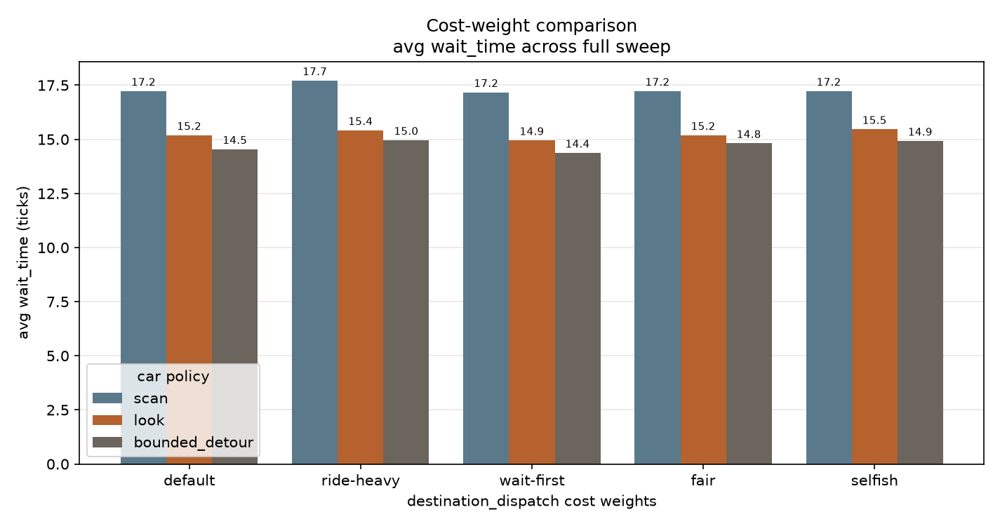
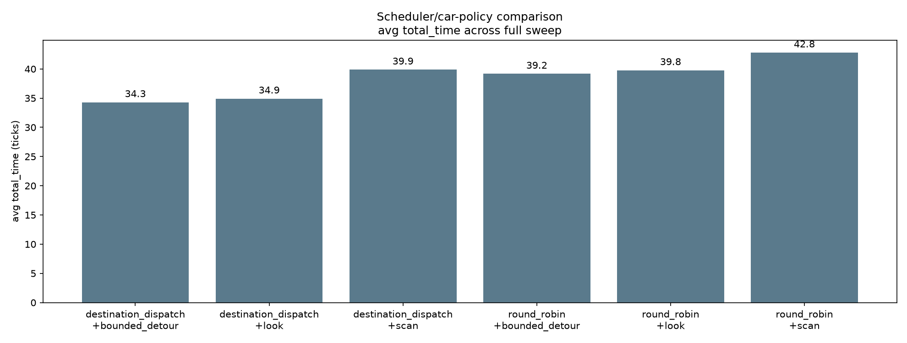
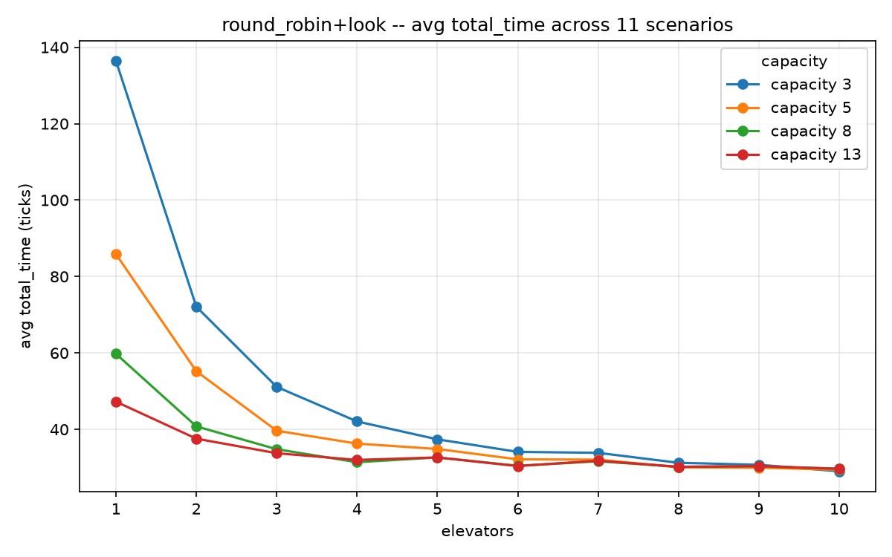
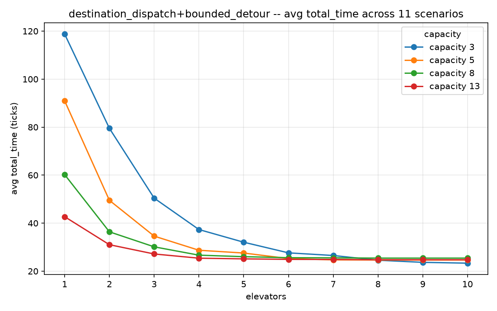

A discrete-time simulation of an intelligent elevator system — two pluggable layers over a fixed engine.
| 62 requests · 50 floors · 6 cars · capacity 10 | avg wait | max wait | avg total |
|---|---|---|---|
| round_robin + look baseline | 22.1 | 81 | 55.5 |
| destination_dispatch + bounded_detour default | 4.9 | 28 | 36.8 |
−78% average wait · −65% worst case — identical input, one thing changed.
How, why — and where it doesn't hold.
sample_full_day_skyscraper50


| 62 requests · 50 floors · 6 cars · capacity 10 | avg wait | max wait | avg total | drift avg / max |
|---|---|---|---|---|
| round_robin + scan | 25.7 | 81 | 64.2 | 13.8 / 74 |
| round_robin + look | 22.1 | 81 | 55.5 | 9.6 / 68 |
| destination_dispatch + bounded_detour | 4.9 | 28 | 36.8 | 0.13 / 6 |
One variable changed. Averages understate the detour policy — it moves the tail, not the mean, so the column to read is max wait: 81 → 28.
architecture
The handover between the layers is one committed stop — nothing richer. Any scheduler composes with any car policy, and a change to one cannot quietly alter the other.
architecture
One tick = one floor. Boarding is instantaneous — which is why a car's
arrival time is pure geometry, the property core/trip_estimator.py is built on.
the menu
| round_robin | naive baseline — no notion of position, queue or capacity | scan | true SCAN — runs to the building's end before reversing |
|---|---|---|---|
| destination_dispatch | scores whole-trip cost using the destination | look | reverses as soon as nothing remains ahead |
| express | implemented, not wired into the CLI | bounded_detour | LOOK + bounded turn-backs |
| zone_based | stub | fcfs | stub |
scan is deliberately still here: it is the weakest policy, and the
control that proves the fairness weight is doing real work.
destination dispatch
Every term is an exact closed form from
core/trip_estimator.py — candidate cars are scored with arithmetic, not with a
simulated run.
destination dispatch
A nearest-car scheduler takes the closer car and drags its reversal point out. Only a scheduler that knows the destination up front can tell those two apart.
destination dispatch
Closed with a pledge ledger inside the scheduler rather than by changing the engine. Same-tick requests interact too, so a whole tick is placed by cheapest insertion — greedy, not globally optimal, and affordable because every evaluation is arithmetic.
destination dispatch
estimate drift is the gap between the wait a scheduler promised and the wait it delivered: 0.13 average against round_robin's 9.6. A computed arrival, not a distance guess.
bounded detour
Plain LOOK is unfair to whoever is standing behind a car that just went by — they wait out the whole remaining sweep plus the return leg. Turning back freely is worse: the car thrashes and everyone aboard pays, with no ceiling.
Worst case is exactly k · 2D = 16 ticks per sweep for everyone
aboard — a guarantee, not a tendency. tests/test_car_policies.py checks it.
bounded detour
A diversion is a sweep extension that snaps back instead of persisting — so the car resumes the trajectory it would have taken anyway.
method
No public trace fits the input schema, so every scenario is hand-built to stress a named failure mode — not random traffic.
11 scenarios × 1–10 elevators × capacity 3/5/8/13 × 6 pairs ≈ 2640 runs in about 30 seconds
wait and total are charted separately — blending them
hides the exact trade this project is about.So nothing after this is one lucky run.
measured, not argued

| preset | wait / travel / fairness |
|---|---|
| default | 1.0 / 0.25 / 0.25 |
| ride-heavy | 1.0 / 1.0 / 0.2 |
| balanced | 1.0 / 0.5 / 0.5 |
| fair | 1.0 / 0.5 / 1.5 |
| selfish | 1.0 / 0.5 / 0.0 |
5 presets × 3 car policies, 1320 runs each.
look and
bounded_detour — the fairness term earns its place.measured, not argued
W_WAIT is pinned at 1.0 in every preset: the cost only ranks cars and is
never reported, so a common factor cancels.
test_weights_reach_the_cost_function pins exactly that.scan, balanced / fair / selfish score identically (17.2 / 39.9)
across the whole fairness range — a consistency check, not a coincidence. A true-SCAN car
reverses at the building's end regardless, so delta_imposed is permanently 0 and
W_FAIRNESS has nothing to multiply.the sweep

| pair | wait | total |
|---|---|---|
| destination_dispatch + bounded_detour | 14.4 | 34.3 |
| destination_dispatch + look | 14.9 | 34.9 |
| destination_dispatch + scan | 17.2 | 40.2 |
| round_robin + bounded_detour | 18.3 | 39.2 |
| round_robin + look | 19.0 | 39.8 |
| round_robin + scan | 19.2 | 42.8 |
The scheduler matters more than the car policy — swapping
round_robin for destination_dispatch buys more than any movement rule does.
experiment design
Not for completeness — so the two effects can be separated.
What the detour policy is worth on its own, under a dispatcher that knows nothing.
19.0 → 18.3 wait
What the dispatcher gains specifically from knowing a car may detour: told the car's bounds, it stops pricing a pickup behind a car as a full reversal.
14.9 → 14.4 wait


The same swap, across every fleet size and capacity: the gap holds at every resourcing level, and at capacity 8 or more the default reaches with 4 cars what the baseline needs 10 to match.
where it doesn't hold
On sample_full_day (4 cars, 35 floors) + look gets 4.3
avg wait / max 22; + bounded_detour gets 7.7 / max 34 — the
reverse of the skyscraper result.
Both runs are committed to outputs/runs/ so the trade stays visible.
Strongest setting on skyscraper50 (+0.97) and stress (+0.51);
third of five on full_day (−0.42) and
downpeak40 (−0.99).
It won the sweep-wide mean — a mean, not a guarantee.
Both the D/k/F bounds and W_FAIRNESS make the average slightly worse in some
scenarios and the worst case much better.
The fairness-vs-efficiency trade, chosen deliberately.
A full car passes a waiting passenger. Capacity pressure therefore shows up as wait, never as rejection.
Which keeps "serve every request eventually" true.
None of these turned up while writing slides — they are why the losing runs are committed to the repo.
trip_estimator its exactness — every closed form becomes an approximation and
the scheduler's ETA stops being a promise. A deliberate next step, not an oversight.express. Implemented: cars opt in via
serviceable_floors, both ends of a trip must be covered, nearest eligible car wins,
and it fails fast rather than stranding a passenger. Not wired in because
destination_dispatch treats the fleet as homogeneous — the real work is teaching
the cost model eligibility, not exposing a flag.